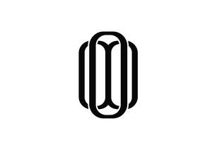

Trade Mark Journal No.2025/014 4 April 2025
UK00004174436 16 March 2025 (25)

- Class 25
- Clothes; Clothing; Swaddling clothes; Baby clothes; Beach clothes; Nappy pants [clothing]; Denims [clothing]; Jackets [clothing]; Work clothes; Shorts [clothing]; Aprons [clothing]; Drawers [clothing]; Drawers as clothing; Clothes for sports; Jackets (Stuff -) [clothing]; Stuff jackets [clothing]; Clothes for sport; Linen clothing; Headbands [clothing]; Headbands for clothing; Kerchiefs [clothing]; Gloves [clothing]; Gloves as clothing; Bottoms [clothing]; Furs [clothing]; Capes (clothing); Trunks being clothing; Maternity clothing; Babies' pants [clothing]; Clothing layettes; Jerseys [clothing]; Layettes [clothing]; Clothing for leisure wear; Gabardines [clothing]; Hoods [clothing]; Oilskins [clothing]; Clothing for babies; Woolen clothing; Ready-to-wear clothing; Garments for protecting clothing; Bodies [clothing]; Tops [clothing]; Belts [clothing]; Gussets for underwear [parts of clothing]; Belts for clothing; Playsuits [clothing]; Collars [clothing]; Veils [clothing]; Pockets for clothing; Knitwear [clothing]; Corsets [clothing, foundation garments]; Paper hats for use as clothing items; Silk clothing; Mitts [clothing]; Fabric belts [clothing]; Hats (Paper -) [clothing]; Paper hats [clothing]; Beach clothing; Belts (Money -) [clothing]; Money belts [clothing]; Braces for clothing; Chaps (clothing); Embroidered clothing; Ready-made clothing; Gussets for bathing suits [parts of clothing]; Visors [clothing]; Casual clothing; Knitted clothing; Caps; Caps with visors; Caps [headwear]; Caps being headwear; Skull caps; Baseball caps; Swimming caps [bathing caps]; Peaked caps; Knitted caps; Baseball caps and hats; Cycling caps; Waterpolo caps; Sports caps and hats; Bucket caps; Sports caps; Bathing caps; Shower caps; Caps (Shower -); Swim caps; Flat caps; Swimming caps; Garrison caps; Golf caps; Knot caps; Cap visors; Cap peaks; Peaks (Cap -); Mitres [hats]; Beanies; Beanie hats; Hats; Bonnets [headwear]; Miters [hats]; Bobble hats; Baseball hats; Visors [headwear]; Visors being headwear; Top hats; Football shirts; Soccer shirts; American football shirts; Football jerseys; Rugby shirts; Sports shirts; Sport shirts; Shirts; Tennis shirts; Polo shirts; Golf shirts; Football shoes; American football shorts; American football pants; Rugby jerseys; Football boots; Moisture-wicking sports shirts; American football bibs; Volleyball jerseys; American football socks; Sports jerseys; Short-sleeved shirts; Fishing shirts; Studs for football shoes; Open-necked shirts; Soccer bibs; Long-sleeved shirts; Short-sleeve shirts; Sports shirts with short sleeves; Hunting shirts; Rugby shorts; T-shirts; Dress shirts; Turtleneck shirts; Baseball uniforms; Yoga shirts; Sports jerseys and breeches for sports; Replica football kits; Studs for football boots; Football boots (Studs for -); Casual shirts; Corduroy shirts; Knit shirts; Short-sleeved T-shirts; Jerseys; Collared shirts; Camouflage shirts; Aloha shirts; Sleep shirts; Woven shirts; Shirts for suits; Soccer shoes; Night shirts; Polo sweaters; Sweat shirts; Sports pants; Athletic uniforms; Maternity shirts; Tee-shirts; Rugby shoes; Soccer boots; Clothing for wear in wrestling games; Padded shirts for athletic use; Sleeveless jerseys; Sports clothing [other than golf gloves]; Sports over uniforms; Jackets being sports clothing; Pique shirts; Ramie shirts; Sweatshirts; Button-front aloha shirts; Sports socks; Sports bibs; Mock turtleneck shirts; Tennis shorts; Baseball shoes; Sports jackets; Rugby tops; Referees uniforms; Golf shorts; Shirts and slips; Basketball shoes; Sports singlets; Hooded sweat shirts; Sports garments; Clothing for sports; Sports clothing; Moisture-wicking sports pants; Basketball sneakers; Athletics vests; Combative sports uniforms; Sports vests; Under shirts; Rugby boots; Shirt fronts; Athletic clothing; Judo uniforms; Tennis sweatbands; Handball shoes; Sports shoes; Sport shoes; Athletic shoes; Athletics shoes; Tennis wear; Sports wear; Shoes for foot volleyball; Foot volleyball shoes; Cleats for attachment to sports shoes; Tennis socks; Tennis dresses.
Fabien Hoo